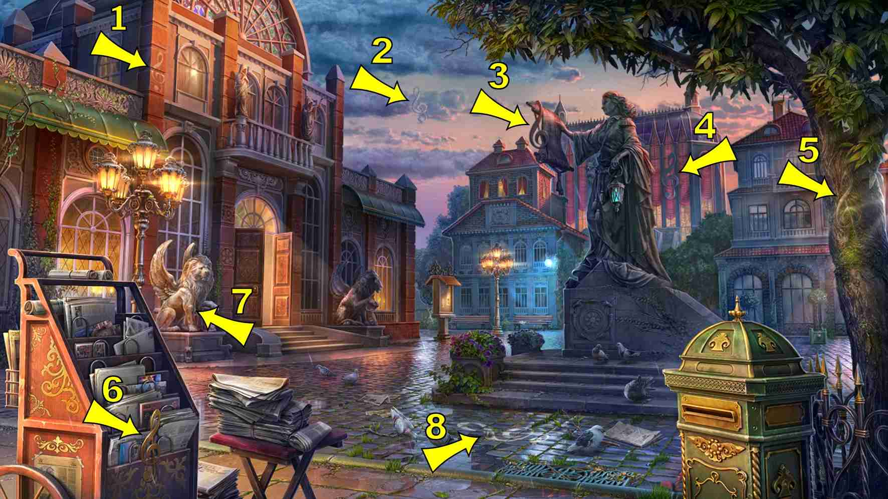
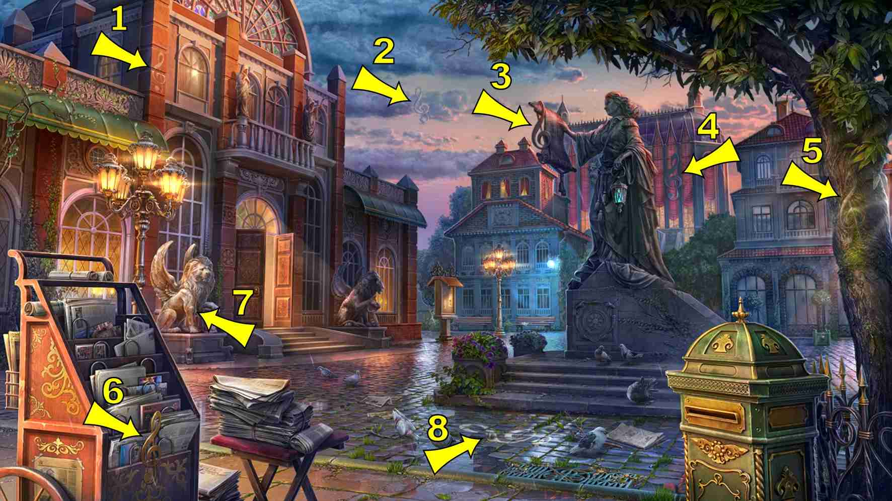

7 items:
- As a shadow on left wall of City Hall first floor

5 items:
- Yellow, half deflated, lodged in branches of tree above central statue
- Blue, behind newsboard


5 items:
- Between wings of right lion

6 items:
- First slot of newspaper rack, as a picture on the newspaper


10 items:
- On triangle roof of right building
- On top of Enchanted Ball building

9 items:
- Perched on flower planter at left of statue base
- Flying left above and in front of far first floor left building
- Flying, past gargoyle left building over patio
- Top newspaper rack left front of picture
- Sitting on statues gown on pedestal
- Flying near central statue's head, hidden by some leaves of tree
- As a golden ornament under the slit of mailbox
- Perched on left shoulder of the statue
- Above double doors entrance
6 items:
- Base of the statue
- Foot on first step in front of open doors of left building
- Climbing roof on building in the middle, just under the middle statue's scroll
- Behind left window above the left lion
- Between City Hall and newsboard
- As a picture on newspaper stack on the ground (behind newspaper stand, bottom left of scene)
8 items:
- Building on the right, against the wall above arcade
- In upper branches of tree on the right
- Under the stool on bottom left, under the stack of newspapers
- Right of the statue, above the stairs of the background building
- On left street lamp
- Halfway between statue base and mailbox
- Under left green awning, just above the left lamp of the left street lamp
- Middle building ground floor, on top of last window on the right
8 items:
- With picture on cobbles in front of statue
- Left building, on right balcony
- On top of newspaper rack short with picture
- Short on cobbles in front of open double doors of the left building
- Central building second floor, blended with left window
- Balcony of right building
- To the right of central building
- Left back building, third floor in front of left window
6 items:
- Big red flag, extreme right of the screen on the tree trunk
- On balcony above double door entrance on the left
- Left of double door
- Hanging from statue right hand, covering the law scroll
- Right building, black flag on left wall in front of background trees
- White folded flag, middle building, between newsboard and lamppost
4 items:
- Red, in the courtyard left of the statue
- Yellow, right of left front lion, left of left building stairs
- Gold, left and beyond mailbox in front of statue stairs
- Etched in stone above right front lion (very hard to see)
8 items:
- Far edge left building
- Above first window left of left buildings double doors
- Top right roof curved corned of center background building
- Above 2nd story left building in front of 1/2 rose window of 3rd floor
- small golden gargoyle in front of mailbox
- Under right sleeve of central statue
- On left edge, 2nd level background left building turned sideways
- Right background building, 1st floor roof between 2 left windows of 2nd floor
7 items:
- Coming out of the double doors left building
- Left of right tree, right of mailbox
- Between bench and street lamp, middle of the screen
- On right statue on balcony above double doors
- Right to the stairs behind central statue
- In window left to double doors, near lamps
- Left back building, left slanted section of 2nd floor roof near 3rd floor wall
7 items:
- Bottom left on top of newspaper rack
- Hanging from central statue's left elbow
- On mailbox, right side
- On street grate
- Hanging on the left of City Hall balcony
- Hanging on tree branch, above central statue
- Folded in the newspaper stack on stool
4 items:
- Straw woman's on top right edge mail box
- Left edge of second floor balcony of the building on extreme right
- On plants near base of central statue
- Lodged between the lamps of the left lamppost
9 items:
- Base of statue
- Lying on the steps
- In the air between 2 buildings
- Left of top balcony right background building
- Left of newspaper table, right of newspaper rack
- Hidden behind the climbing plants above newspaper stand
- Right side of round stained glass window on top of City Hall
- At the right side base of the lamp post in the background
- In front of middle background building just above top curve on right side of curving roof
8 items:
- Right side of 3rd slot from bottom of newspaper rack
- Cobbles just beyond left central drainage grate front center of picture
- On the balcony above double doors, covering the left statue
- In central statue's left hand
- Above green awning left on City Hall
- On top of Enchanted Ball building
- Around blue light bulb, middle building
- On round small window, above right lion
5 items:
- Hanging on the left of City Hall balcony
- Covering left lion's face
- Right of newspaper stool, in front of pigeons, blue
- On top of letterbox
- Blended with right sleeve of central statue's gown
7 items:
- Top of newspaper rack
- Left hand center statue
- Left corner of right background house loudspeaker
- Between wheat ears on lower right of statue base, engraved
- In tree branches, middle of the screen
- Just above the double doors & slightly to the left
- On steps leading to double doors, left of right lion statue
9 items:
- Doorway of left building [City Hall]
- Right side center statue pedestal
- On flat roof of left building far side
- Back right corner roof of left background building
- Blended with middle lamppost pole
- Corner of left lion base
- On bark of right tree trunk
- On Enchanted Ball building, right of central statue
- Left building, above open double doors, left balcony corner
8 items:
- Leaning against newspapers on table
- Leaning on the front left side pedestal
- Hanging from tree top center of picture
- Hanging from left hand of central statue, hidden behind the blue lamp
- In the right lion's paw at City Hall
- On triangle-shape end of pillar, end left of City Hall
- A design on window frame to the right of double doors
- On window under balcony of right building
8 items:
- Slot of letterbox on right
- Left building left side leaning open on bottom step
- Open, bottom step in front of statue
- Open on cobbles between left planter of statue and right of newspaper table back 6 feet from edge of cobbles
- Flipped back open in 2nd slot newspaper rack
- Left building, 1st left window from the door, upper part, open
- Left building, 1st right window above the door, second story, open
- In paws of right lion
7 items:
- 1st step from bottom in front of female statue
- Red paint, On front edge above mail slot of mail box on right
- Blue paint, On newspaper table in front of stack
- Red paint, on sidewalk right of newspaper table
- Red paint, Across facade of middle building
- Blue paint, at the foot of right lion
- Blue paint, under top shelf of newspaper stand


3 items:
- Upper right corner in tree (green)
- Dead center on building (red)
- Around statue's neck
4 items:
- Bottom of City Hall's left door
- Bottom left of statue's pedestal
- In tree branch, above statue
- Between left lamppost lights
3 items:
- Head of right Lion statue
- Left building, far right edge of cornice of first floor roof
- Base of central statue, relief on cog shield
 



9 items:
- Position1
- Add: golden decoration on bottom left corner of newspaper stand
- Add: right bench middle building
- Add: top of lamppost in the middle
- Add: top left of Enchanted Ball building
- Add: above balcony City Hall
- Add: left door City Hall double doors
- Right bottom window left background building
- Front center newspaper rack main panel


7 items:
- In the statue's hair
- Right side of City Hall round stained glass window
- on the green mailbox right lower corner
- Painted white on the cobblestones in front of left building's stairs
- on front central drainage grate
- on newspaper rack, 4th row from bottom
- Left building, behind street light on ornate panel above window.